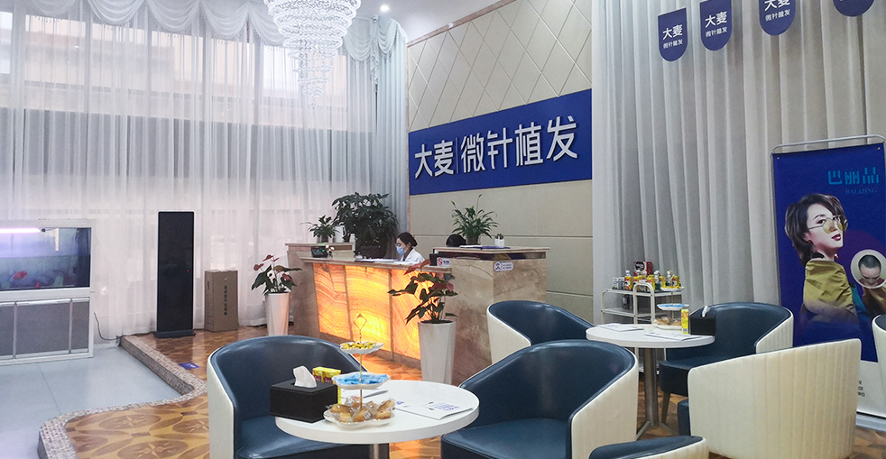
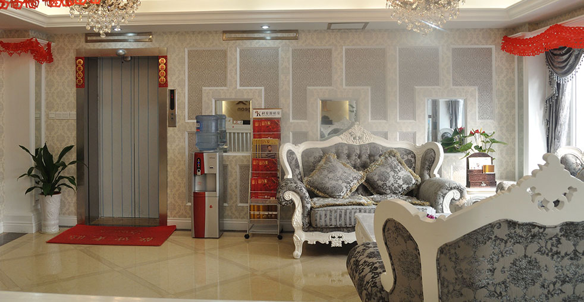

Nationwide Network of Premier Hair Restoration Clinics
With 31 clinics across China's major cities, Barley brings world-class microneedle hair transplant technology to patients nationwide.
China has emerged as a leading destination for hair transplant surgery, combining advanced medical technology with competitive pricing and world-class facilities. Barley Microneedle Hair Transplant Hospital, established by a team of expert doctors, has grown to become one of China's largest and most trusted hair restoration networks with 31 branches nationwide.
Our clinics span from Beijing and Shanghai in the east to Chengdu and Kunming in the west, from Shenyang and Harbin in the north to Guangzhou and Shenzhen in the south. Wherever you are in China, there's a Barley clinic nearby, ready to help you achieve your hair restoration goals with our patented microneedle FUE technology.
All our clinics follow the same rigorous standards for safety, quality, and patient care. Each location features state-of-the-art facilities, experienced surgeons, and our proprietary microneedle hair transplant system that delivers natural-looking results with minimal downtime.
Discover the advantages of choosing China's leading hair transplant network.
Convenient access to premium hair restoration across China's major cities.
Team of highly trained specialists with extensive hair transplant experience.
Advanced microneedle FUE system for precise, natural-looking results.
Rigorous safety standards and sterilization protocols at all clinics.
Professional English-speaking staff at all major city locations.
World-class quality at prices more affordable than Western clinics.
Comprehensive solutions for all types of hair loss with advanced microneedle technology
Personalized hairline design for natural results that nicely match your facial features, using advanced microneedle technology to restore a youthful appearance.
Learn MorePrecision microneedle implantation increases density while maintaining natural growth direction, achieving higher density implantation for thicker, fuller hair.
Learn MoreComprehensive restoration for all stages of crown baldness, using our patented microneedle technology to achieve natural coverage results.
Learn MoreNatural-looking eyebrow restoration with precision implantation designed to nicely match your facial aesthetics, bringing fullness and dimension.
Learn MoreArtistic implantation creates the ideal beard or mustache, filling sparse areas to create a masculine look that nicely complements your features.
Learn MorePrecision implantation to restore or enhance your sideburns, creating natural density and shape that nicely frames your face.
Learn MoreMulti-site body hair transplantation with careful implantation ensuring natural growth direction and density for highly realistic appearance.
Learn MoreComprehensive hair loss treatment including medication therapy, PRP treatment, and scalp care programs to prevent further hair loss and promote healthy growth.
Learn MoreProfessional hair care including personalized scalp care, nutritional therapy, and maintenance programs to support long-term hair health.
Learn MoreReal results from our satisfied patients across China. See the transformation for yourself.
Professional facilities and patented microneedle technology across China
Barley Microneedle Hair Transplant Hospital operates 31 branches across China's major cities, forming the largest hair restoration network in the country. Each location features state-of-the-art facilities and a team of internationally trained surgeons. With over 20 years of experience and 14 national patents, our hospitals have successfully completed tens of thousands of hair restoration procedures. Our network combines traditional Chinese medical excellence with cutting-edge microneedle technology to deliver natural-looking, long-lasting results for patients from around the world.
Our patented microneedle implantation technology represents the pinnacle of hair restoration innovation. Unlike traditional FUE methods, our microneedle technique uses precision implanters that create minimal tissue damage, ensuring graft survival rates above 98%. This technology allows for higher density packing, natural hairline design, and faster recovery times. With 14 national patents, Barley leads the industry in hair transplant technology advancement, and this same technology is deployed consistently across all 31 locations in China.
Hear from our satisfied patients from around the world.
"I flew from Los Angeles to Shanghai for my hair transplant with Barley. The level of care and attention to detail was incredible. Dr. Li and her team made me feel completely at ease. The results after 10 months are far better than I expected. Worth every penny and the trip!"
Los Angeles, USA
"I researched hair transplant clinics across Asia and chose Barley in Beijing. The technology they use is state-of-the-art and the results speak for themselves. My hairline looks completely natural and I've regained so much confidence. Highly recommend!"
London, UK
"As someone from Seoul, I was looking for a high-quality option nearby. Barley in Shenyang was the perfect choice. The clinic is modern, the staff speaks English, and the results are amazing. I tell all my friends in Korea about Barley now."
Seoul, South Korea
Find your nearest Barley clinic from our 31 locations across China.

Capital city flagship clinic

Northern coastal metropolis

Shanxi provincial capital

Shandong provincial capital

China's international hub

Zhejiang provincial capital

Zhejiang coastal city

Jiangsu provincial capital

Garden city of Jiangsu

Taihu Lake city

Historic canal city

Yangtze River estuary

Guangdong provincial capital

China's tech hub

Fujian provincial capital

Guangxi regional capital

Henan provincial capital

Hubei provincial capital

Hunan provincial capital

Jiangxi provincial capital
Find your nearest clinic and start your hair restoration journey today
Essential information for international patients
Common questions from international patients
We recommend choosing the clinic closest to your international gateway or combining your treatment with tourism. Beijing, Shanghai, and Guangzhou have the most international flight connections. All clinics maintain the same high standards.
Visa requirements depend on your nationality. Many countries can apply for visa-free transit (up to 144 hours) or tourist visas. We recommend checking with your local Chinese embassy. Our team can provide invitation letters if needed.
Costs typically range from 15,000 to 50,000 RMB ($2,000-$7,000 USD) depending on the number of grafts and procedure type. This is significantly more affordable than Western countries while maintaining world-class quality.
We recommend staying 5-7 days: 1-2 days for consultation and preparation, 1 day for the procedure, and 2-3 days for follow-up and initial recovery before traveling home.
Yes, Barley uses patented microneedle FUE technology that meets or exceeds international standards. Our 14 national patents demonstrate our commitment to innovation. Many of our techniques are adopted by clinics worldwide.
Everyone's hair loss journey and solution are unique due to a variety of factors. Our hair restoration experts will assist you in determining the root cause and the best solution for your hair restoration plan. If you have any questions, please ask; we are happy to assist.
+86 18618396621


hanying@damaizf.com